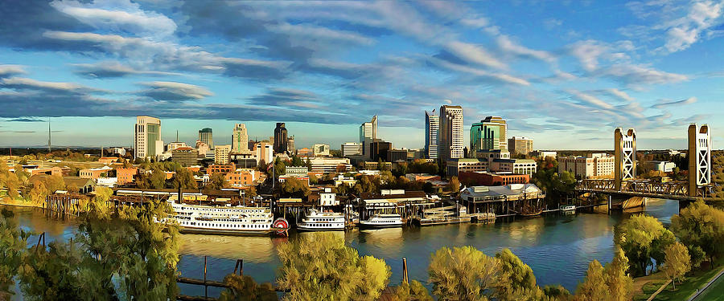

Welcome to California!

Fun facts about Sacramento
- One of the most underrated coffee cities
- One of the largest food producers in California
- City of Sacramento was built underground
- A craft beer hub
- Sacramento is known as the “City of Trees”
Sources:
Matador Network
Source
Sacramento Statistics
- Population: 528,001 as of 2022
- Median income: $39,374.00 as of 2022
- Incorporated: February 27, 1850
- Region: Northern California
- The classification of the city: Rural
- Income compared to the rest of the state: Lower
Sources:
The National League of Cities (NLC)
Source 1
Data USA
Source 2
Golden State
 California Poppy
California Poppy